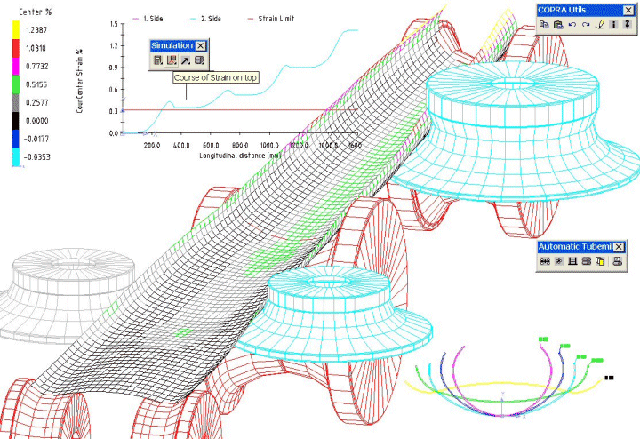

|
Bunun yanýnda geliþtirilip ticari olarak pazarlanan roll form tasarým programlarý da mevcuttur. Bunlar arasýnda en çok tanýnan birkaçý Baran Software (Amerika) [7], Delta Engr. (Kanada) [8], Ubeco (Almanya) [9] ve Copra (Almanya)'dýr [10]. Roll form programlarýnýn hepsinde temel amaç makara tasarýmýný kolaylaþtýrmak ve makaralarýn teknik resimlerini süratli ve saðlýklý bir biçimde elde etmektir. Bu yazýlýmlarýn henüz olmadýðý veya yaygýnlaþmadýðý dönemlerde çiçek diyagramý önce sert teller bükülerek tel model yapýlýr, daha sonra iðneleme tezgâhýnda (nibbler) sac plakalardan makara modelleri yapýlýrdý. Daha sonra üniversal torna tezgâhý üzerinde iþlenen makaralarýn boyutsal olarak doðruluðu bu plaka modeller ile eþleþtirilerek saðlanýrdý. Makara takýmý üzerinde deneme aþamasýnda yapýlan her türlü deðiþiklik plaka modeller üzerine aynen iþlenir, zaman içinde aþýnan makaralarýn yüzey geometrisinin taþlama ve/veya kaplama sonrasýnda plaka modellerin ayný olmasý saðlanýrdý.
Süratle geliþen BDT ve BDÝ (Bilgisayar Destekli Ýmalat) teknolojileri ile makara tasarýmlarý tamamen elektronik ortama taþýndý, makara imalatýnda ise sayýsal denetimli (CNC) torna ve taþlama tezgâhlarýnýn kullanýmýna geçildi. Bu durumda roll form makara tasarýmýna özel geliþtirilmiþ BDT programlarýnýn da önemi çok arttý. Makara takýmýnýn imalatýndan sonraki deneme-sorun giderme sürecinin kýsaltýlmasý ise gerek yüksek geliþtirme maliyeti, gerekse pazara çýkýþ süresindeki kýsýtlamalarla zorunlu hale geldi.
Verilen bir sac profil kesitinin þekillendirilmesi için gerekli makara takýmýnýn tasarýmý ilk baþta basit bir iþ gibi görünür. Ancak makaralar tornalandýktan sonra istenen toleranslar çerçevesinde kusursuz bir profil elde edene kadar uzun, zahmetli ve masraflý bir deneme-iyileþtirme süreci gerekebilir. Ýþlenen sac þerit üzerinde oluþan aþýrý þekil deðiþimi, pekleþme ve artýk gerilmeler açýlma, burulma, çarpýlma ve ondülasyon vb. çeþitli kusurlara yol açabilir. Bunlar giderilene kadar makine atýl kalýr. Ýlave makara takýmlarý (pasolar) gerekirse iþ daha da zorlaþýr, çünkü yeni makara yataklarý (redüktörler vb.) ile makinenin uzatýlmasý gerekebilir. Bütün bu zorluklar roll form yönteminin tecrübeye dayalý bir zanaat olarak ele alýnmasý sonucunu doðurmuþtur. Bu yaklaþýmý ancak giderek güçlenen ve deneysel olarak doðrulanmýþ bilgisayar destekli tasarým ve analiz yöntemleri ile aþmak mümkün olmuþtur.
COPRA® RF gibi yazýlýmlarýn amacý roll form yöntemi ile açýk ve kapalý profil imalatýnýn her aþamasýný desteklemektir. Çiçek þemasý ile kademeli olarak bükme iþleminin tasarýmýndan baþlayarak bütün teknik dokümantasyonun (makara teknik resimleri, parça listeleri, CNC parça programlarý) saðlanmasý ve iþletme sýrasýnda makara ve diðer takýmlarýn kalite kontrollerinin ve bakýmlarýnýn takibi bu programlar ile mümkündür. Bunlardan COPRA® programý ayrýca makara profilinin ölçümü ile teknik resimlerin kýyaslanmasý ile boyut hatalarýný ve asgari torna pasosu ile makaranýn istenen profile kavuþturulmasýný saðlayabilmektedir.
Çiçek þemasý çizilip roll form prosesi tasarlanýrken en önemli faaliyet iþlem sýrasýnda sac þerit üstünde oluþan deformasyonun kýsa süre içinde hesaplanarak iþlem basamaklarý (pasolar) arasýnda olabildiðince homojen daðýtýlmasý ve böylelikle özellikle boylamasýna yönde aþýrý þekil deðiþimi ile oluþabilecek geometrik kusurlarýn önlenmesidir. Süratli bir birim þekil deðiþimi hesabý pasolar arasýnda havada asýlý duran sac þeridin geometrisini analitik veya yarý-ampirik modellerle yaklaþýk ifade eden ve hesaplayan bir bilgisayar programý ile mümkündür. Böylesi modellerden literatürde ayrýntýlý olarak tanýtýlanlar vardýr. Ticarî programlardan COPRA® doðrusal, polinomyal, trigonometrik ve Hauschild türü modellerle hesaplama imkâný sunmakta ve Þekil 3'tekine benzer görüntüler ile malzeme türüne, sac kalýnlýðýna, makara geometrisine baðlý olarak (elastik ve plastik ) birim þekil deðiþimi ve gerilme gibi deðerlerin daðýlýmýný göstermektedir. Böylesi ekran görüntülerini deðerlendiren tasarýmcý gerektiðinde çiçek þemasýnda deðiþiklikler yaparak belirli pasolar arasýnda sýnýr deðerleri aþan þekil deðiþimine izin vermemektedir. Çiçek þemasýnda yapýlacak deðiþiklik teknolojik olarak daha geliþmiþ boru ve tüp iþlemede tam veya yarý-otomatik yapýlabilirken, açýk profillerde tamamen manüel olarak yapýlmak durumundadýr. Bu hesaplamalar ile tasarýmcý hem profil bükme pasolarýnýn sayýsý, türleri ve geometrileri yanýnda makaralarýn çaplarý, köþe radyuslarý ve kenar pahlarý vb. ayrýntýlarýn etkilerini öngörebilmektedir. Böylelikle deneme-iyileþtirme aþamasýnda ortaya çýkacak kusurlarýn riski azaltýlmakta ve bu aþamadaki zaman, malzeme ve iþçilik kaybý en aza indirilebilmektedir.

Þekil 3: COPRA® DTM (Deformation Technology Module) ile roll form iþlemi sýrasýnda boylamasýna yönde oluþan birim þekil deðiþiminin daðýlýmý
Çiçek þemasý ve makara takýmýnýn ayrýntýlarý tespit edildikten sonra makaralarý iþlemek için gerekli teknik dokümanlar (parça malzeme listeleri, imalat teknik resimleri ve CNC parça programlarý) oluþturulur ve makaralar sýrayla iþlenir. Bazý makaralar sadece ince paso tornalama ile yapýlabilirken, bir kýsmý taþlama, yüzey sertleþtirme veya krom vb. kaplama gerektirmektedir. Ardýndan roll form tezgâhý üzerine monte edilen takýmlar yavaþ ilerleme (jogging) modunda denenir. Çiçek þemasý geliþtirilirken optimize edilmemiþ makara takýmlarý iþte bu aþamada büyük sorunlar çýkarabilir ve en azýndan bir kýsmýnýn düzeltilmesi veya bazen en baþtan yapýmý gerekebilir.
Seri üretimde kullanýlacak makaralar iþlenmeden önce yapýlabilecek daha ayrýntýlý ve hassas hesaplama sonlu elemanlar yöntemi kullanýlarak yapýlýr. Yukarýda kýsaca anlatýlan analitik veya yarý-ampirik matematik modelleme yerine sonlu elemanlar analizi daha kapsamlý ve gerçeðe yakýn deðerleri göreceli olarak çok uzun hesaplama zamaný içinde verebilir. Literatürde statik kapalý veya dinamik açýk sonlu eleman modelleri içinde katý ve kabuk elemanlar kullanýlarak geliþtirilmiþ çeþitli yöntemler mevcuttur. Yakýn zamana kadar üniversite ve enstitülerde bir araþtýrma konusu olmaktan öteye gidemeyen bu yaklaþým, donaným ve yazýlým teknolojilerindeki geliþmeye paralel olarak 2002 yýlýndan sonra roll form makara tasarýmýnda da günlük endüstriyel kullanýma uygun hale gelmiþtir. COPRA® ticarî programýna ek olarak satýlan modülünde ünlü MSC-MARC sonlu elemanlar programý ile özel bir arayüzü oluþturulmuþ ve endüstriyel uygulamaya uygun kolay kurulan ve süratli bir model ile roll form proses simülasyonu (benzetim) mümkündür (Þekil 4). Bu model statik kapalý integrasyon altýnda katý elemanlar kullanarak doðrusal olmayan elastik-plastik malzeme akýþ benzetimi yapmaktadýr. Söz konusu endüstriyel sonlu elemanlar analizi modülünün COPRA® içinde çalýþýr hale getirilmesi on iki yýl süren bir çalýþma sonucu ortaya çýkmýþtýr [10].
Kabaca 1000 kadar elemanýn kullanýldýðý (akademik modellere göre basitleþtirilmiþ) bu modelde sonlu elemanlar aðý oluþturulurken veya sýnýr ve proses koþullarý ve hesaplama parametreleri belirlenirken kullanýcýnýn doðrudan müdahalesi gerekmemekte, hesaplamanýn her türlü ön-hazýrlýðý (pre-processing) COPRA®FEA tarafýndan otomatik olarak yapýlmaktadýr. Standart bir kullanýcý çiçek þemasýný programýn kullanýcý arayüzü olarak çalýþan AutoCAD içinde çizmekte, malzeme özellikleri, sac kalýnlýðý, makara detaylarý gibi bilgiler ile yetinirken, usta kullanýcý bütün sonlu eleman hesap parametrelerini belirleyebilme imkânýna sahiptir. Hesaplama sonucunda sadece teorik elastik-plastik birim þekil deðiþimi, eþdeðer gerilme ve artýk gerilme daðýlýmý deðil, geri esneme sonrasý parça geometrisi bilgisayar ekranýnda açýkça gözlenebilmektedir. Hesaplanan parça geometrisi dikkatle incelenirse çarpýlma, burulma, kambur, kenar ondülasyonu, orta çukurlaþmasý vb. her türlü kusur rahatlýkla öngörülebilmektedir (Þekil 5). Bu kusurlar iyi proses tasarýmý ve optimizasyonu ile sonlu elemanlar benzetiminde önlendiðinde, ilk makaralarýn iþlenmesinden sonra yapýlan roll form denemelerinde sorun çýkma riski çok daha azalmaktadýr.
|